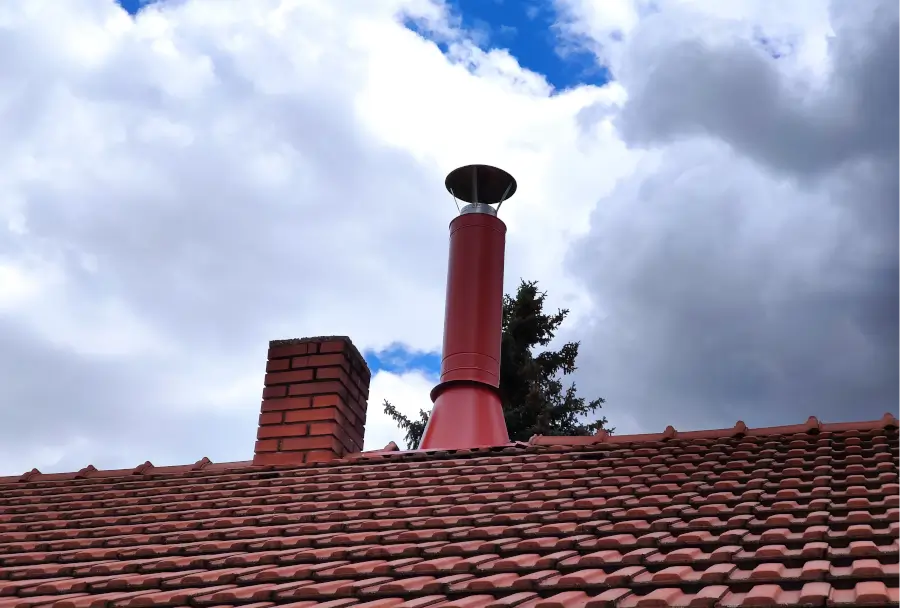
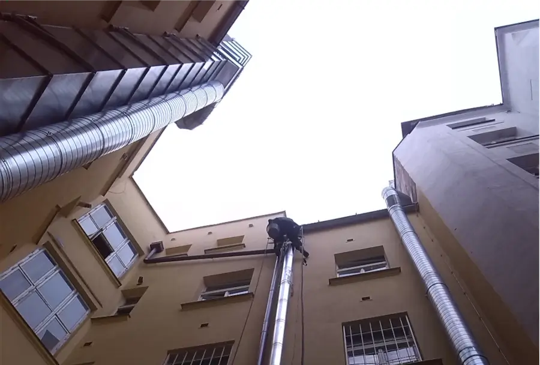
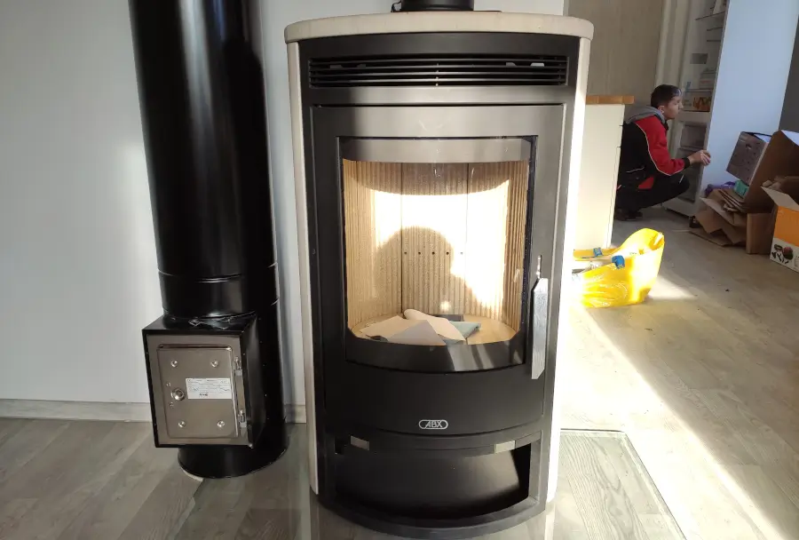

Kominické práce


Komíny i kamna
Montujeme přetlakové systémy a třísložkové komíny pro plynná, kapalná a tuhá paliva, komínové vložky pro tuhá paliva včetně frézování.
Stavíme stavebnicové komíny typu BLK ‑ betonový lehčený komín.


Přetlakové systémy:
Komponenty mohou být z plastu (maximální teplota spalin 120°C) nebo z nerezu (maximální teplota spalin 250°C).
Lze objednat systém jednoduchý, koaxiální nebo třísložkový.
Třísložkové systémy:
Atmosferické systémy třísložkové mají plášť z nerez nebo hliníku.
Nerezové vložky jsou pevné tloušťky 0,8mm a 1mm od průměru 100‑500mm
Komínové vložky:
Vložky pevné tloušťky 0,8mm a 1mm od průměru 140‑500mm
Vložky ohebné tloušťky 0,4mm od průměru 140‑300mm.
Kontakt pro více informací ohledně kominických prací:
Václav Kindl
telefon:
+420 603 462 937email:
vendakindl@email.cz